A Microsoft Frontpage ’97
Editor program
angol nyelvû változatának ismertetése
I. rész
A Microsoft
Frontpage ’97 Editor egy WYSIWYG típusú webszerkesztõ
program, ami azt jelenti, hogy amit szerkesztés közben a
képernyõn látunk, azt ugyanúgy fogják a különbözõ browserek (böngészõk) is megjeleníteni.
(azért elõfordulhat, hogy egyes böngészõk nem azt
jelenítik meg, mint amit szerkesztés közben látunk, ezért érdemes ismerni a HTML kódokat
is, hogy a szükséges javításokat kézzel el lehessen
végezni.)
A program elindítása után, a
következõ eszköztár (toolbar) áll a rendelkezésünkre:
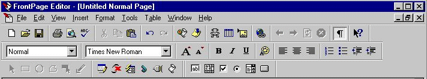
| 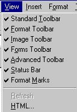 |
A különbözõ eszköztárak
csoportokba vannak rendezve, így azt az eszköztárat
amelyre nincs szükségünk eltûntethetjük a
képernyõrõl , ha a View menüpontban az adott eszköztár
kijelölését megszüntetjük.
|
Elõször ismerkedjünk meg a Format (formátum) eszköztár adta lehetõségekkel.
Format (formátum) eszköztár
| 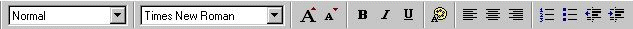 |
Stílus
választó
|
Betûtípus
választó
|
|
A szöveg begépelése után
(vagy pl. egy szövegszerkesztõ programból való exportálás
után) elkezdhetjük a szöveg formázását.
A szöveget különbözõ
beépített stílusok szerint módosíthatjuk. A
stílusokat egy legördülõ menü segítségével választhatjuk
ki.
| A legördülõ menü |
A gyakrabban
használt stílusok eredménye
|
| 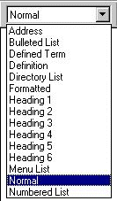 |
Heading 1
Heading 2
Heading 3
Heading 4
Heading 5
Heading 6
|
Address
- Bulleted list
- stb...
- stb..
- Defined term
- Definition
-
Formatted
- Numbered list
- stb...
- stb...
|
| 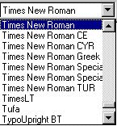 |
A szöveg betûtípusát is egy legördülõ
listából választhatjuk ki..
(A különbözõ betûtípusok használatával óvatosan bánjunk, hiszen nem
biztos, hogy az a betûtípus amit mi használunk, az
más gépeken is installálva van. Ebben az esetben nem a
mi általunk meghatározott betûtípus lesz látható,
hanem a böngészõ helyettesíti egy másikkal.  nem érdemes egy speciális
betûtípusra építeni az elkészítendõ oldalakat nem érdemes egy speciális
betûtípusra építeni az elkészítendõ oldalakat |
Nézzük mire szolgálnak az alábbi ikonok. (az utolsó
oszlopban a megfelelõ menüpontok találhatóak)
| 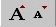 |
A szöveg méretét tudjuk megnövelni, illetve
lekicsinyíteni.. |
Format/
Font |
| 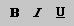 |
A betûket megvastagíthatjuk (Bold), használhatunk dõlt (Italic)
és aláhúzott (Underline) típust is. (ez
utóbbit ha lehet kerüljük el, mert a linkek is
aláhúzva jelennek meg, és ez félreértésre adhat
okot)
Ez csak egy kék színû aláhúzott
szöveg
Ez pedig az ELTE
honlapjára mutató link |
Format/
Font |
| 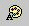 |
A szöveg színének beállítására szolgál.
A megjelenõ panelben kiválaszthatjuk a szöveg
színét: (Ha a felkínált színek nem felelnek meg,
akkor a Define Custom Colors pontban mi is kikeverhetünk újabb
színeket) |
Format/
Font |
| 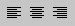 |
A bekezdésekat balra, középre, illetve jobbra tudjuk igazítani |
Format/
Paragraph |
| 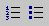 |
Használhatunk számozott ill. felsorolás listákat
is, ha a listaelemeket kijelöljük és a megfelelõ ikonokra kattintunk. |
Format/
Bullets and
numbering |
| 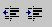 |
A bekezdések behúzását tudjuk beállítani. |
|
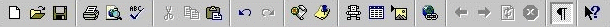
A standard eszköztáron a
windowsban szokásos ikonokat ismerhetjük fel.
 |
Új oldal készítése |
File/New |
| 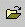 |
oldal megnyitása |
File/Open |
 |
az aktuális oldal elmentése |
File/Save |
| 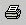 |
az aktuális oldal nyomtatása |
File/Print |
| 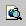 |
az aktuális oldal megtekintése az
alapértelmezett böngészõben |
File/
Preview in
browser |
| 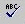 |
helyesírás-ellenõrzés
elindítása |
Tools/Spelling |
| 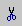 |
a kijelölt rész
kivágása
(vágás után a kijelölt objektumok az eredeti
helyükrõl eltûnnek
és a vágólapra kerülnek) |
Edit/Cut |
 |
a kijelölt rész vágólapra másolása |
Edit/Copy |
| 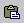 |
beillesztés a vágólapról |
Edit/Paste |
|
az utolsó mûvelet
visszavonása |
Edit/Undo |
|
az eddig visszavont mûveletek visszaállítására
szolgál |
Edit/Redo |
| 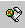 |
a Frontpage explorer elindítása
|
Tools/
Show
frontpage explorer |
| 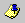 |
Megmutatja a listát a további teendõkrõl
(Pl. defináltunk egy linket egy oldalra, de az még nem
létezik, akkor a program nyilvántartja, hogy ezt az
oldalt még el kell készítenünk. |
|
|
Táblázat beillesztése. A megjelenõ stilizált táblázat segítségével
kijelölhetjük, hogy hányszor hányas táblázatot
szeretnék beilleszteni. |
Table/
Insert
table |
| 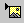 |
Kép beillesztése a megadott URL-rõl. |
Insert/
Image |
|
Link definiálása |
Insert/
Hyperlink |
|
Visszafele lépked a megnyitott dokumentumokban |
|
|
Elõrefele lépked a megnyitott dokumentumokban |
|
| 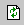 |
Frissíti a dokumentumot. (betölti az utoljára
elmentett verziót) |
|
 |
Leállítja az adott oldal betöltését |
|
|
Megmutatja a speciális formázó karaktereket a
szövegben
(Pl. táblázat határvonala, sortörés ...) |
|
|
Segítséget ad a kiválasztott menüpontról,
ikonról stb... |
|
Nézzük, hogy hogyan állíthatjuk be a szerkesztett oldalunk
jellemzõit! (File/Page properties)
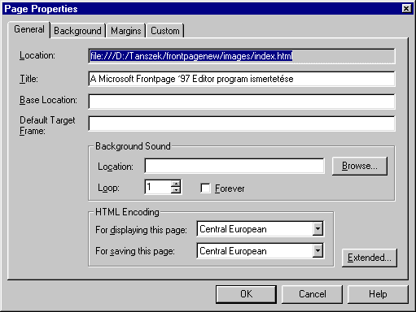
General (általános)
- A Location sor tartalmazza a szerkesztett oldal
útvonalát és nevét.
- A Title sorban adhatjuk meg az oldalunk címét.
(az a szöveg ami a böngészõ címsorában látszik)
- A Base location sor kitöltésével a relatív
címeket abszolút cimekké konvertálhatjuk
- Default target frame: Ha használunk frame-eket,
akkor itt adhatjuk meg, hogy az oldalunkról meghívott
linkek melyik frame-be töltõdjenek be
alapértelmezésben.
- Background sound: A háttérzene megadása (csak
bizonyos browserek tudják értelmezni) A formátum
wav,mid és au lehet. A Loop mezõben
állíthatjuk be, hogy a háttérzene hányszor
ismétlõdjön. (A forever kapcsoló
kiválasztásával végteleníthetjük a lejátszást)
- A HTML encoding részben beállíthatjuk az
oldal kódolását. (Ha magyar ékezetes betûkkel
írunk, akkor célszerû a Central European kódolást
használni)
Background (háttér) (Ugyanezt az ablakot a Format/background menüponttal is elõhívhatjuk.)
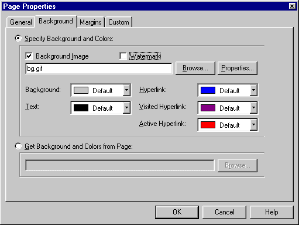
A Specify Background and colors részben megadhatjuk
a háttérképet (Background image). Ha a watermark
opciót is kiválasztjuk, akkor a háttérkép az oldal
gördítése során egyhelyben marad. (nem mindegyik böngészõ
támogatja!)
A background részben kiválaszthatjuk a felsorolt
színek közül a háttérszínt, a text részben a
szöveg, a hyperlink részben a linkek, a visited
hyperlink részben a már meglátogatott linkek, az active
hyperlink részben pedig az éppen aktuális link színét
határozhatjuk meg.
Ha ugyanazt a beállítást több oldalnál is alkalmazni
szeretnénk, akkor a Get background and colors from page
pontban meghatározhatjuk, hogy melyik oldal beállításai
legyenek érvényesek az aktuális oldalra.
Most ismerkedjünk meg a linkek kezelésével
A link szövegének kijelölése után, az ikon megnyomásával, vagy az Insert/Hyperlink menüpont kiválasztásával, illetve a Ctrl+k
billentyûk lenyomásával definiálhatunk linkeket.
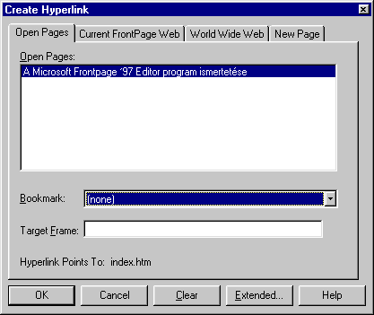
Az Open pages részben láthatjuk, hogy jelenleg
milyen oldalak állnak szerkesztés alatt. A Bookmark részben
kiválaszthatjuk az adott oldalban definiált könyvjelzõk
közül azt, ahova a link mutasson. (A könyvjelzõk szerepe az,
hogy alkalmazásukkal egy adott html oldal általunk definiált
részére ugorhatunk. Egy objektumot (szöveget, képet, stb.)
elnevezhetünk az oldalon belül (könyvjelzõvel láthatunk el),
és a link erre a névre fog
hivatkozni.oldal.html#konyvjelzo_neve formátumban. Könyvjelzõt
az Edit/Bookmark... menüpontban definiálhatunk. )
A Target frame mezõbe írhatjuk be, hogy az adott link
melyik frame-be töltõdjön be.
Természetesen nem csak azokra az
oldalakra helyezhetünk el linket, amelyek szerkesztés alatt
állnak. Ehhez viszont a World Wide Web fület
kell kiválasztanunk.
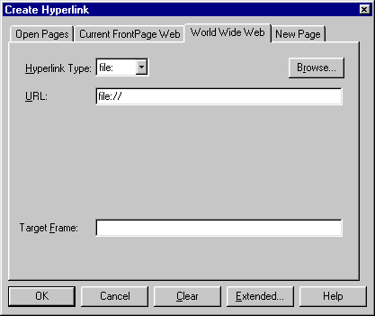
A Hyperlink Type (hiperlink típus) mezõbõl
kiválaszthatjuk a nekünk megfelelõ linktípust (file:, http:,
mailto:, news:, telnet:, stb...) Utána beírhatjuk az URL részbe
az oldal elérhetõségét. A Target frame mezõbe
írhatjuk be, hogy az adott link melyik frame-be töltõdjön be.
Ha még nem létezik az az oldal, ahova
a link mutat, akkor azt a New Page részben kell
definiálnunk.
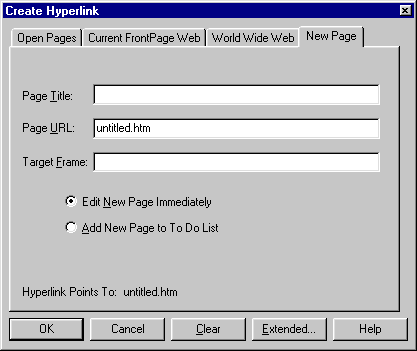
A Page Title mezõ tartalmazza
az oldal címét. A Page URL mezõben adhatjuk meg az
elérhetõségét és nevét, a Target frame mezõbe
írhatjuk be, hogy az adott link melyik frame-be töltõdjön be.
Ezután választhatunk, hogy rögtön nekilátunk az új oldal
elkészítésének (Edit new page immediately) vagy csak
felvesszük a további teendõk közé. (Add new page to To
do List)
A Táblázatok használata
| Táblázatot az ikonnal, vagy a Table/Insert table menüponttal illeszthetünk be. A
továbbiakban a táblázattal kapcsolatos lehetõségeket
a Table menüpontban találjuk. Ha a Table/Insert table pontot választjuk ki, akkor a megjelenõ
ablakban beállíthatjuk a táblázat fontosabb
tulajdonságait.
- Rows: sorok száma
- Columns: oszlopok
száma
- Alignment:
igazítás (balra, jobbra, középre)
- Border size keret
vastagsága pixelben
- Cell padding:
cellabélés
- Cell spacing: cellatávolság
- width: méret
megadása pixelben vagy az ablak méretének
bizonyos százalékában
|
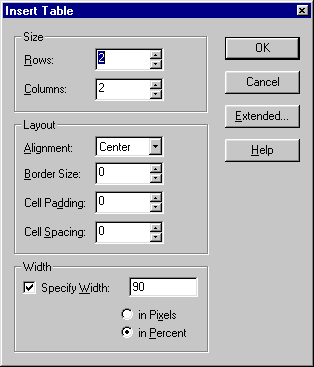 |
Ismerkedjünk meg a Table menü által nyújtott
lehetõségekkel.
| 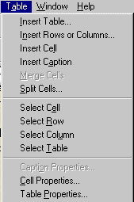 |
|
| Táblázat
beszúrása |
| Sorok vagy
oszlopok beszúrása |
| Cella
beszúrása |
| Táblázat
feliratának beszúrása |
| Cellák
összevonása |
Cellák
felosztása
--------------------------------------------- |
| Cella kijelölése |
| Sor kijelölése |
| Oszlop kijelölése |
Táblázat kijelölése
--------------------------------------------- |
| A táblázat cím tulajdonágainak
megváltoztatása |
| A cella tulajdonságok
megváltoztatása |
| A tábla tulajdonságainak
megváltoztatása |
Az egyes funkciók magukért beszélnek, ezért csak 2
menüpontot nézünk meg részletesebben.
Cell properties (A
cella tulajdonságok megváltoztatása)
Horizontal Alignment
(left, center, right) |
A legördülõ listából kiválasztható, hogy a
cellatartalom vízszintesen hogyan igazodjon (balra,
középre, jobbra) |
Vertical Alignment
(top, middle, bottom) |
A legördülõ listából kiválasztható, hogy a
cellatartalom függõlegesen hogyan igazodjon (felülre,
középre, alulra) |
| Header Cell |
a celltartalom vastag betûkkel jelenik meg |
| No Wrap |
ezzel állíthatjuk be, hogy a cella tartalmát a
böngészõ ne tördelje szét. |
| Use Background Image |
a cella háttérképét adhatjuk meg |
| Background Color |
a cell háttérszínét adhatjuk meg |
| Border |
a keret színét adhatjuk meg |
| Light Border |
a világosabb keret színét adhatjuk meg |
| Dark Border |
a sötétebb keret színét adhatjuk meg |
Specify Width
in Pixels, in Percent |
a cella szélességét állíthatjuk be pixelekben
vagy százalékos formában |
| Number of Rows Spanned |
megadhatjuk hogy az aktuális cella hány cellának
megfelelõ helyet foglaljon el a sorban |
| Number of Columns Spanned |
megadhatjuk hogy az aktuális cella hány cellának
megfelelõ helyet foglaljon el az oszlopban |
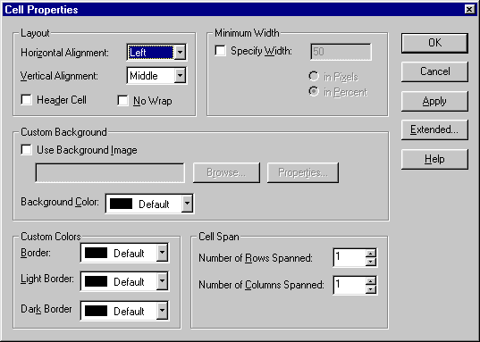
Table properties (Táblázat tulajdonságai)
A Table properties ablakban a táblázat egészére jellemzõ
tulajdonságokat állíthatunk be. (a beállítható funkciókat
már érintettük a Cell properties illetve insert
table ablak kapcsán)
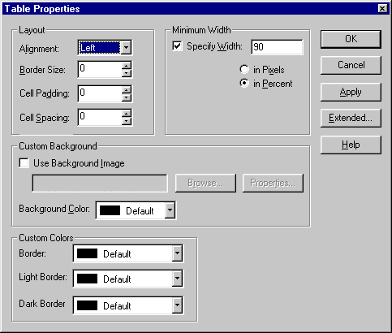
II. rész
Vissza az elejére
Összeállította:
Abonyi-Tóth Andor
©ELTE TTK Informatika Szakmódszertani Csoport
{kind=link}
{kind=link}